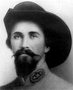

|

|

|
|
|
John Hunt Morgan, known for his raids behind Union lines,
was born on June 1, 1825 in Huntsville, Alabama and was
raised in Lexington, Kentucky. As a young man, Morgan
participated in the Mexican War and was promoted to First
Lieutenant in a cavalry regiment. After the war's
conclusion he became a businessman in Kentucky. However,
Morgan's interests remained in the military, and in 1857 he
helped organize the Lexington Rifles, a local militia group.
With the outbreak of the Civil War, he quickly joined the
Confederate forces and was commissioned captain of a
squadron of cavalry. At first, it was the squadron's main
duty to scout. The following year, Morgan's focus shifted
to raiding. At the Battle of Shiloh in April 1862, he was
promoted to colonel as a result of his courageous actions.
Morgan became famous for his raids throughout Kentucky
and Tennessee in 1862. His first engagement began on July
4, 1862 when Union forces moved toward Chattanooga. Their
operation was thrown into confusion by Morgan when he led
two regiments on an attack and captured a cavalry post.
Next, he captured two depots and had several engagements
with militia encountered along his path. Morgan moved from
town to town throughout Kentucky all the while destroying
Union supplies. He returned to Tennessee on July 22nd after
covering more than 1,000 miles, capturing 1,200 prisoners,
and losing fewer than 100 men. Morgan's raid did much
damage to Federal morale.
Morgan went on to lead many more raids throughout the
war. His successes included the capture of numerous Union
posts, the destruction of railroads, bridges, and lines of
communication, as well as the capture of many prisoners of
war. Morgan's raids caused great damage behind Federal
lines and cost the Union a great deal of men and money.
After demolishing a strong garrison at Hartsville, Tennessee
Morgan was promoted to Brigadier General on December 11,
1862. Though victorious during 1862, he faced failure
during the latter half of 1863. While on a raid through
southern Indiana and Ohio Morgan and most of his men were
captured by the Union cavalry and imprisoned for several
months. The General managed to escape and return to the
Confederacy, but yet the Ohio Raid was considered a reckless
adventure by many Southerners and damaged Morgan's
reputation.
Nevertheless, in the spring of 1864 he was placed in
command of the Department of Southwestern Virginia. Six
months later he received command of the forces stationed at
Jonesboro, Georgia. However, when he and his men reached
Greenville, Tennessee, he was surprised by the Federal army
and shot and killed on September 4, 1864.
Source: Joan Waugh, ed., Facts on File Encyclopedia of American
History: Civil War and Reconstruction, 1856 to 1869 (New York: Facts on
File, 2003), 240.
|